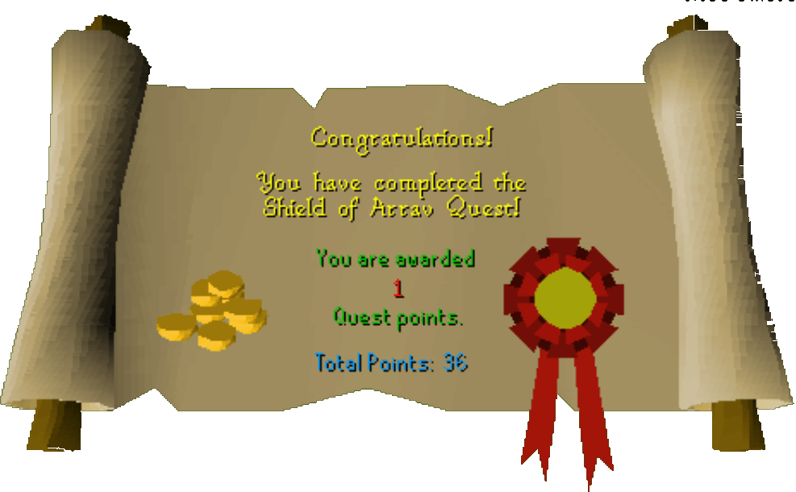

Shield of Arrav
Description: Varrockian literature tells of a valuable shield, stolen long ago from the museum of Varrock, by a gang of professional thieves. See if you can track down this shield and return it to the museum. You will need a friend to help you complete this quest.Difficulty: Novice
Length: Medium
Items & Skills Needed:
- Another player who has not done the quest
Recommended:
- 10 Combat & Food (Black Arm Gang)
- Combat Gear
Reward: 1 Quest point, 600 coins
Instructions
Walk to the palace library and ask Reldo if he's got any quests for you. He will begin talking about the Shield of Arrav and ask you to find a book on one of the shelves. It should be on the eastern side of the middle shelf in the middle of the room.
Find the book and read it. It talks about the gangs: Black Arm and Phoenix. Speak to Reldo afterwards, telling him you read it.
Choosing your gang:
Blackarm members must fight a level 17 Weaponsmaster and steal the two Phoenix crossbows.Phoenix members must fight a level 5 Jonny the Beard to steal an intelligence scroll.
Phoenix Gang
Go to Varrock Square and speak to Baerek, the fur trader, and ask about the Phoenix gang. He will only tell you about the gang for 20 coins. (Cheap scum.) After paying him, he'll tell you about the gang.
Head south along the path and turn into the alley south of the Blue Moon Inn. Keep going until you see the dungeon symbol on the map. Climb down the ladder.
You will find Straven in the room, speak to him. Tell him you know who he really is and would like to offer your services. He'll say you need to kill an agent and bring back his intelligence scroll.
Go back up the ladder and outside. Enter the "Blue Moon Inn" Pub just north and find Jonny the beard.
After killing Johnny, pick up the intelligence report he dropped and then head back to the Phoenix Gang's headquarters and speak to Straven.
Straven then hands you a key. Keep the key for your contact later.
Head through the door and go to the southwestern-most chest in the hideout. Open and search the chest to grab a shield half.
Head outside and meet your contact, who is joining the other gang. Hand them the key you got from Straven. They can now steal two crossbows and join the gang to get their shield half.
You will now have to wait until your contact has the other half of the shield to continue.
Blackarm Gang
If you chose Black Arm, talk to the tramp in the alley by the sword shop in Varrock. Ask him what's behind the alley. Ask him if they may let you join.
Go down the alley and walk through two sets of doors until you find Katrine. Speak to her and ask her to join the gang. Then she will tell you to steal some Phoenix crossbows. This is where your friend comes in.
Wait for your friend to join the Phoenix Gang to trade you the weapon store key they got from Straven.
Directly south of Aubery's rune shop, use the key on the door. It should be just a small room that only has a ladder and a dresser inside. Go up the ladder.
Upstairs, attack the level 17 Weaponsmaster. Once killed, quickly pick up the two crossbows on the floor on the west side before he spawns.
Go down the ladder and head back to Katrine. Tell her you got the crossbows. She welcomes you to the ganghouse.
Go through the north door and up the stairs east. Once upstairs, go south and open the cupboard on the east wall. Right-click search to find half of the Shield of Arrav.
Finishing the Quest
Meet your friend at the Varrock's Museum, which is on the northeastern side of the city, south of the church.
To continue, one player must be holding both halves of the shield.
Choose who this person is and trade over half of the shield to them.
With both halves in the inventory, speak to the Curator. The curator will give you two certificates. Nicely trade one over to your friend in the other gang.
Head northwest into the palace courtyard and into the palace. Go to the throne room, just to the east of the main entrance. Talk to King Roald to recieve your reward.
Congratulations, Quest Complete!

This quest guide was written on RuneHQ by halojunkie. Thanks to Fran 2004 for corrections.
This quest guide was entered into the database on Tue, Apr 13, 2004, at 05:38:26 PM by DRAVAN, and was last updated on Fri, Sep 19, 2025, at 09:56:34 PM by Halogod35.